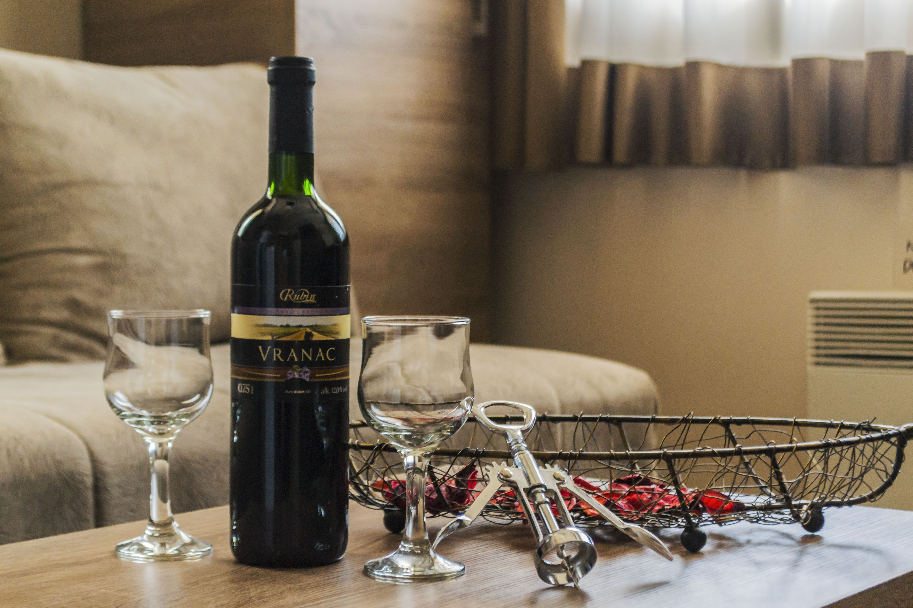

1 / 4

2 / 4

3 / 4

4 / 4

Objekat Apartment Petrovic br 1 Milmari D nudi smeštaj sa besplatnim WiFi internetom i pogledom na planinu na Kopaoniku. Ovaj apartman sa besplatnim privatnim parkingom nalazi se u oblasti pogodnoj za bavljenje aktivnostima poput pešačenja i skijanja.
Apartman ima 1 spavaću sobu, flat-screen TV sa kablovskim kanalima, opremljenu kuhinju sa frižiderom i pločom za kuvanje, kao i 1 kupatilo sa tušem. Ski-centar Kopaonik udaljen je 7 km od apartmana. Govorimo vaš jezik!